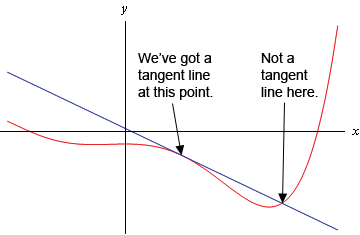
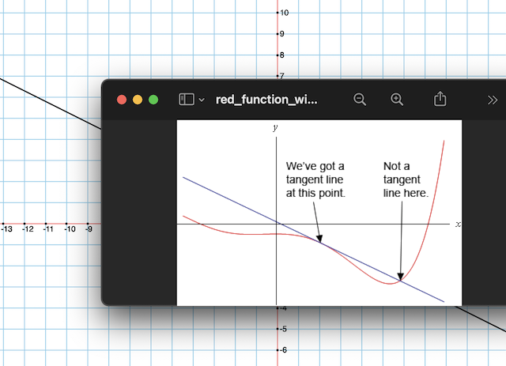

In the xy-plane the red curve is the graph of some anonymous function, and the blue straight line is tangent to the red curve at some point in the fourth quadrant. Does the tangent line have a positive or negative slope? Approximately what is the slope of that line? Explain.
answer
Here is the original graph on top of my own graph. In my own graph I draw this function: f(x) = (-1/2)*x + 0.3, and it looks like the slope is almost identical to the original graph. So I think the tangent line in the original graph has a slope of about -1/2.